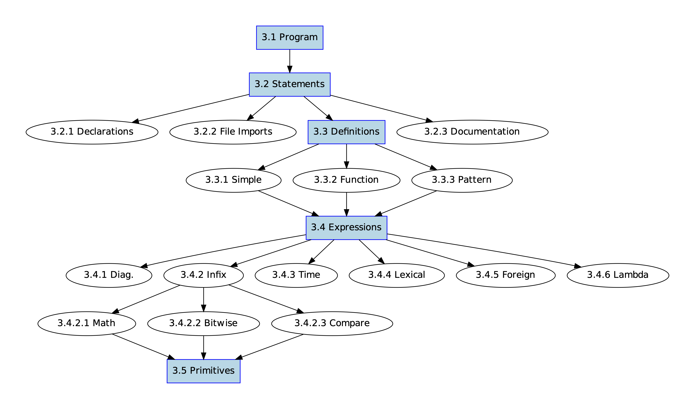
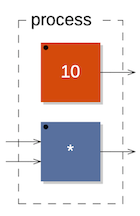
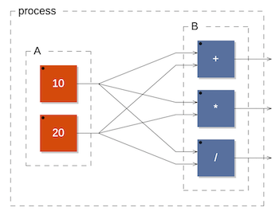
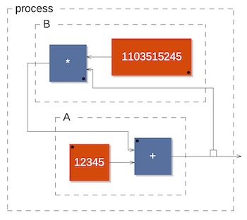

Faust syntax
This section describes the syntax of Faust. Figure fig-syntax gives an overview of the various concepts and where they are defined in this section.  Overview of Faust syntax
As we will see, definitions and expressions have a central role.
Faust program
A Faust program is essentially a list of statements. These statements can be declarations, imports, definitions and documentation tags, with optional C++ style (//... and /.../) comments.
A Simple Program
Here is a short Faust program that implements of a simple noise generator. It exhibits various kind of statements: two declarations, an import, a comment and a definition. We will see later on documentation statements (sec-documentation).
declare name "noise";
declare copyright "(c)GRAME 2006";
import("music.lib");
// noise level controlled by a slider
process = noise * vslider("volume", 0, 0, 1, 0.1);
The keyword process is the equivalent of main in C/C++. Any Faust program, to be valid, must at least define process.
Statements
The statements of a Faust program are of four kinds: metadata declarations, file imports, definitions and documentation. All statements but documentation end with a semicolon (;).
Declarations
Meta-data declarations (for example declare name "noise";) are optional and typically used to document a Faust project.
Contrary to regular comments, these declarations will appear in the C++ code generated by the compiler. A good practice is to start a Faust program with some standard declarations:
declare name "MyProgram";
declare author "MySelf";
declare copyright "MyCompany";
declare version "1.00";
declare license "BSD";
Imports
File imports allow to import definitions from other source files.
For example import("maths.lib"); imports the definitions of the maths.lib library, a set of additional mathematical functions provided as foreign functions.
Documentation
Documentation statements are optional and typically used to control the generation of the mathematical documentation of a Faust program. This documentation system is detailed chapter \ref{chapter-mdoc}. In this section we will essentially describe the documentation statements syntax.
A documentation statement starts with an opening <mdoc> tag and ends with a closing </mdoc> tag. Free text content, typically in LaTeX format, can be placed in between these two tags.
Moreover, optional sub-tags can be inserted in the text content itself to require the generation, at the insertion point, of mathematical equations, graphical block-diagrams, Faust source code listing and explanation notice.
The generation of the mathematical equations of a Faust expression can be requested by placing this expression between an opening <equation> and a closing </equation> tag. The expression is evaluated within the lexical context of the Faust program.
Similarly, the generation of the graphical block-diagram of a Faust expression can be requested by placing this expression between an opening <diagram> and a closing </diagram> tag. The expression is evaluated within the lexical context of the Faust program.
The <metadata> tags allow to reference Faust metadatas (cf. declarations), calling the corresponding keyword.
The <notice /> empty-element tag is used to generate the conventions used in the mathematical equations.
The <listing /> empty-element tag is used to generate the listing of the Faust program. Its three attributes mdoctags, dependencies and distributed enable or disable respectively <mdoc> tags, other files dependencies and distribution of interleaved faust code between
Definitions
A definition associates an identifier with an expression it stands for.
Definitions are essentially a convenient shortcut avoiding to type long expressions. During compilation, more precisely during the evaluation stage, identifiers are replaced by their definitions. It is therefore always equivalent to use an identifier or directly its definition. Please note that multiple definitions of a same identifier are not allowed, unless it is a pattern matching based definition.
Simple Definitions
The syntax of a simple definition is:
For example here is the definition of random, a simple pseudo-random number generator:
random = +(12345) ~ *(1103515245);
Function Definitions
Definitions with formal parameters correspond to functions definitions.
For example the definition of linear2db, a function that converts linear values to decibels, is :
linear2db(x) = 20*log10(x);
Please note that this notation is only a convenient alternative to the direct use of lambda-abstractions (also called anonymous functions). The following is an equivalent definition of linear2db using a lambda-abstraction:
linear2db = \(x).(20*log10(x));
Definitions with pattern matching
Moreover, formal parameters can also be full expressions representing patterns.
This powerful mechanism allows to algorithmically create and manipulate block diagrams expressions. Let's say that you want to describe a function to duplicate an expression several times in parallel:
duplicate(1,x) = x;
duplicate(n,x) = x, duplicate(n-1,x);
Please note that this last definition is a convenient alternative to the more verbose :
duplicate = case {
(1,x) => x;
(n,x) => duplicate(n-1,x);
};
Here is another example to count the number of elements of a list. Please note that we simulate lists using parallel composition : (1,2,3,5,7,11). The main limitation of this approach is that there is no empty list. Moreover lists of only one element are represented by this element :
count((x,xs)) = 1+count(xs);
count(x) = 1;
If we now write count(duplicate(10,666)) the expression will be evaluated to 10.
Please note that the order of pattern matching rules matters. The more specific rules must precede the more general rules. When this order is not respected, as in :
count(x) = 1;
count((x,xs)) = 1+count(xs);
the first rule will always match and the second rule will never be called.
Please note that number arguments in pattern matching rules are typically constant numerical expressions, so can be the result of more complex expressions involving computations done at compile-time.
Variants
Some statements (imports, definitions) can be preceded by a variantlist, composed of variants which can be singleprecision, doubleprecision, quadprecision or fixedpointprecision This allows some imports and definitions to be effective only for a (or several) specific float precision option in the compiler (that is either -single, -double, -quad or -fx respectively). A typical use-case is the definition of floating point constants in the maths.lib library with the following lines:
singleprecision MAX = 3.402823466e+38;
doubleprecision MAX = 1.7976931348623158e+308;
Expressions
Despite its textual syntax, Faust is conceptually a block-diagram language. Faust expressions represent DSP block-diagrams and are assembled from primitive ones using various composition operations. More traditional numerical expressions in infix notation are also possible. Additionally Faust provides time based expressions, like delays, expressions related to lexical environments, expressions to interface with foreign function and lambda expressions.
Constant Numerical Expressions
Some language primitives (like rdtable, rwtable, hslider etc.) take constant numbers as some of their parameters. This is the case also for expressions using pattern matching techniques. Those numbers can be directly given in the code, but can also be computed by more complex expressions which have to produce numbers at compile time. We will refer to them as constant numerical expressions in the documentation.
Diagram Expressions
Diagram expressions are assembled from primitive ones using either binary composition operations or high level iterative constructions.
Diagram composition operations
Five binary composition operations are available to combine block-diagrams: recursion, parallel, sequential, split and merge composition. One can think of each of these composition operations as a particular way to connect two block diagrams.
To describe precisely how these connections are done, we have to introduce some notation. The number of inputs and outputs of a bloc-diagram are notated and . The inputs and outputs themselves are respectively notated : , , , and , , , etc..
For each composition operation between two block-diagrams and we will describe the connections that are created and the constraints on their relative numbers of inputs and outputs.
The priority and associativity of this five operations are given table table-composition. Please note that a higher priority value means a higher priority in the evaluation order. There is a companion table infix-comparison-priority that gives the associativity of each numerical operator in infix expressions.
Block-Diagram composition operation priorities
The parallel composition (A,B) (figure figure-par1) is probably the simplest one. It places the two block-diagrams one on top of the other, without connections. The inputs of the resulting block-diagram are the inputs of and . The outputs of the resulting block-diagram are the outputs of and .
Parallel composition is an associative operation : and are equivalents. When no parenthesis are used : A,B,C,D, Faust uses right associativity and therefore build internally the expression . This organization is important to know when using pattern matching techniques on parallel compositions.
 Example of parallel composition (10,*)
The sequential composition (figure figure-seq1) expects: It connects each output of to the corresponding input of :
 Example of sequential composition ((*,/):+)
Example of sequential composition ((*,/):+)
Sequential composition is an associative operation : and are equivalents. When no parenthesis are used, like in , Faust uses right associativity and therefore build internally the expression .
The split composition (figure figure-split1) operator is used to distribute the outputs of to the inputs of .
 example of split composition ((10,20) <: (+,*,/))
Each input of is connected to the output of :
The merge composition (figure figure-merge1) is the dual of the split composition. The number of outputs of must be a multiple of the number of inputs of : Each output of is connected to the input of : The incoming signals of an input of are summed together.
 example of merge composition ((10,20,30,40) :> *)
example of merge composition ((10,20,30,40) :> *)
The recursive composition A~B (figure figure-rec1) is used to create cycles in the block-diagram in order to express recursive computations. It is the most complex operation in terms of connections.
To be applicable it requires that : Each input of is connected to the corresponding output of via an implicit 1-sample delay : and each output of is connected to the corresponding input of :
The inputs of the resulting block diagram are the remaining unconnected inputs of . The outputs are all the outputs of .
 example of recursive composition +(12345) ~ *(1103515245)
Inputs and outputs of an expression
These two constructions can be used to know at compile time the number of inputs and outputs of any Faust expression.
They are useful to define high order functions and build algorithmically complex block-diagrams. Here is an example to automatically reverse the order of the outputs of an expression.
Xo(expr) = expr <: par(i,n,selector(n-i-1,n))
with { n=outputs(expr); };
And the inputs of an expression :
Xi(expr) = bus(n) <: par(i,n,selector(n-i-1,n)) : expr
with { n=inputs(expr); };
For example Xi(-) will reverse the order of the two inputs of the substraction.
Iterations
Iterations are analogous to for(...) loops and provide a convenient way to automate some complex block-diagram constructions.
The following example shows the usage of seq to create a 10-bands filter:
process = seq(i, 10,
vgroup("band %i",
bandfilter( 1000*(1+i) )
)
);
The number of iterations must be a constant expression.
Infix Notation
. For example if you want to multiply two numbers, let say 2 and 3, you can write directly 23 instead of the equivalent core-syntax expression 2,3:.
The infix notation is not limited to numbers or numerical expressions. Arbitrary expressions A and B can be used, provided that A,B has exactly two outputs. For example you can write /2. It is equivalent to ,2:/ which divides the incoming signal by 2.
Examples of equivalences are given table tab-infixrules.
| 2-3 | 2,3 : - | |
| 2*3 | 2,3 : * | |
| _@7 | _,7 : @ | |
| _/2 | _,2 : / | |
| A<B | A,B : < | |
Infix and core syntax equivalences
In case of doubts on the meaning of an infix expression, for example _, it is useful to translate it to its core syntax equivalent, here ,_:, which is equivalent to *.
Built-in primitives that can be used in infix notation are called infix operators and are listed in this section. Please note that a more detailed description of these operators is available section primitives.
Comparison Operators
Comparison operators compare two signals and produce a signal that is 1 when the comparison is true and 0 when the comparison is false.
The priority and associativity of the comparison operators is given table infix-comparison-priority.
Comparison operators priorities in infix expressions
Math Operators
Math operators combine two signals and produce a resulting signal by applying a numerical operation on each sample.
The priority and associativity of the math operators is given table infix-math-priority.
Math operators priorities in infix expressions
Bitwise operators
Bitwise operators combine two signals and produce a resulting signal by applying a bitwise operation on each sample.
The priority and associativity of the bitwise operators is given table infix-bitwise-priority.
Bitwise operators priorities in infix expressions
Delay operators
Delay operators combine two signals and produce a resulting signal by applying a bitwise operation on each sample.
The delay operator @ allows to delay left handside expression by the amount defined by the right handside expression. The unary operator "'" delays the left handside expression by one sample.
The priority and associativity of the delay operators is given table infix-delay-priority.
| Syntax | Pri. | Assoc. | Description |
| expression\ @\ expression | 9 | left | variable delay |
| expression \' | 10 | left | one-sample delay |
Delay operators priorities in infix expressions
Prefix Notation
Beside infix notation, it is also possible to use prefix notation. The prefix notation is the usual mathematical notation for functions , but extended to infix operators.
| *(2,3) | 2,3 : * | |
| @(_,7) | _,7 : @ | |
| /(_,2) | _,2 : / | |
| <(A,B) | A,B : < | |
Prefix to core syntax translation rules
It consists in first having the operator, for example /, followed by its arguments between parentheses: /(2,3) (see table tab-prefixrules).
Partial Application
The partial application notation is a variant of prefix notation in which not all arguments are given. For instance /(2) (divide by 2), ^(3) (rise to the cube) and @(512) (delay by 512 samples) are examples of partial applications where only one argument is given. The result of a partial application is a function that "waits" for the remaining arguments.
When doing partial application with an infix operator, it is important to note that the supplied argument is not the first argument, but always the second one, as summarized table tab-partialrules.
| +(C) | _,C:* | |
| -(C) | _,C:- | |
| <(C) | _,C:< | |
| /(C) | _,C:/ | |
Partial application of infix operators
For commutative operations that doesn't matter. But for non-commutative ones, it is more ``natural'' to fix the second argument. We use divide by 2 (/(2)) or rise to the cube (^(3)) more often than the other way around.
Please note that this rule only applies to infix operators, not other primitives or functions. If you partially apply a regular function to a single argument, it will correspond to the first parameter.
Time expressions
Time expressions are used to express delays. The notation X@10 represent the signal X delayed by 10 samples. The notation "X'" represent the signal X delayed by one sample and is therefore equivalent to X@1.
The delay (automatically promoted to int) don't have to be fixed, but it must be positive and bounded. The values of a slider are perfectly acceptable as in the following example:
process = _ @ hslider("delay",0, 0, 100, 1);
Environment expressions
Faust is a lexically scoped language. The meaning of a Faust expression is determined by its context of definition (its lexical environment) and not by its context of use.
To keep their original meaning, Faust expressions are bounded to their lexical environment in structures called closures. The following constructions allow to explicitly create and access such environments. Moreover they provide powerful means to reuse existing code and promote modular design.
With
The with construction allows to specify a local environment, a private list of definition that will be used to evaluate the left hand expression
In the following example :
pink = f : + ~ g with {
f(x) = 0.04957526213389*x
- 0.06305581334498*x'
+ 0.01483220320740*x'';
g(x) = 1.80116083982126*x
- 0.80257737639225*x';
};
the definitions of f(x) and g(x) are local to f : + ~ g.
Please note that with is left associative and has the lowest priority:
- f : + ~ g with {...} is equivalent to (f : + ~ g) with {...}.
- f : + ~ g with {...} with {...} is equivalent to ((f : + ~ g) with {...}) with {...}.
Letrec
The letrec construction is somehow similar to with, but for difference equations instead of regular definitions. It allows to easily express groups of mutually recursive signals, for example: x(t)&=&y(t-1)+10; y(t)&=&x(t-1)-1; as E letrec { 'x = y+10; 'y = x-1; }
The syntax is defined by the following rules:
Please remarks the special notation 'x=y+10 instead of x=y'+10. It makes syntactically impossible to write non-sensical equations like x=x+1.
Here is a more involved example. Let say we want to define an envelop generator with an attack time, a release time and a gate signal. A possible definition is the following:
ar(a,r,g) = v
letrec {
'n = (n+1) * (g<=g');
'v = max(0, v + (n<a)/a - (n>=a)/r) * (g<=g');
};
With the following semantics for and :
n(t)&=&(n(t-1)+1) * (g(t) <= g(t-1))
v(t)&=& max(0, v(t-1) + (n(t-1)
In order to factor some expressions common to several recursive definitions, we can use the clause where followed by one or more definitions. These definitions will only be visible to the recursive equations of the letrec, but not to the outside world, unlike the recursive definitions themselves.
For instance in the previous example we can factorize (g<=g) leading to the following expression:
ar(a,r,g) = v
letrec {
'n = (n+1) * c;
'v = max(0, v + (n<a)/a - (n>=a)/r) * c;
where
c = g<=g';
};
Please note that letrec is essentially syntactic sugar.
Here is an example of 'letrec':
x,y letrec {
x = defx;
y = defy;
z = defz;
where
f = deff;
g = defg;
};
and its translation as done internally by the compiler:
x,y with {
x = BODY : _,!,!;
y = BODY : !,_,!;
z = BODY : !,!,_;
BODY = \(x,y,z).((defx,defy,defz) with {f=deff; g=defg;}) ~ (_,_,_);
};
Environment
The environment construction allows to create an explicit environment. It is like a with, but without the left hand expression. It is a convenient way to group together related definitions, to isolate groups of definitions and to create a name space hierarchy.
In the following example an environment construction is used to group together some constant definitions :
constant = environment {
pi = 3.14159;
e = 2.718;
...
};
The . construction allows to access the definitions of an environment (see next paragraph).
Access
Definitions inside an environment can be accessed using the '.' construction.
For example constant.pi refers to the definition of pi in the above constant environment.
Please note that environment don't have to be named. We could have written directly environment{pi = 3.14159; e = 2.718; ... }.pi
Library
The library construct allows to create an environment by reading the definitions from a file.
For example library("miscfilter.lib") represents the environment obtained by reading the file "miscfilter.lib". It works like import("miscfilter.lib") but all the read definitions are stored in a new separate lexical environment. Individual definitions can be accessed as described in the previous paragraph. For example library("miscfilter.lib").lowpass denotes the function lowpass as defined in the file "miscfilter.lib".
To avoid name conflicts when importing libraries it is recommended to prefer library to import. So instead of :
import("miscfilter.lib");
...
...lowpass....
...
};
the following will ensure an absence of conflicts :
fl = library("miscfilter.lib");
...
...fl.lowpass....
...
};
Component
The component(...) construction allows to reuse a full Faust program as a simple expression.
For example component("freeverb.dsp") denotes the signal processor defined in file "freeverb.dsp".
Components can be used within expressions like in:
...component("karplus32.dsp"):component("freeverb.dsp")...
Please note that component("freeverb.dsp") is equivalent to library("freeverb.dsp").process.
Explicit substitution
Explicit substitution can be used to customize a component or any expression with a lexical environment by replacing some of its internal definitions, without having to modify it.
For example we can create a customized version of component("freeverb.dsp"), with a different definition of foo(x), by writing :
...component("freeverb.dsp")[foo(x) = ...;]...
};
Foreign expressions
Reference to external (foreign) C functions, variables and constants can be introduced using the foreign expressions mechanism.
Foreign function declaration
An external C function is declared by indicating its name and signature as well as the required include file. The file "maths.lib" of the Faust distribution contains several foreign function definitions, for example the inverse hyperbolic sine function asinh is defined as follows
asinh = ffunction(float asinhf|asinh|asinhl|asinfx(float), <math.h>, "");
The signature part of a foreign function, float asinhf|asinh|asinhl|asinfx(float) in our previous example, describes the prototype of the C function: its return type, function names and list of parameter types. Because the name of the foreign function can possibly depend on the floating point precision in use (float, double, quad and fixed-point), it is possible to give a different function name for each floating point precision using a signature with up to four function names.
In our example, the asinh function is called asinhf in single precision, asinh in double precision, asinhl in quad precision, and asinhfx in fixed-point precision. This is why the four names are provided in the signature.
Foreign functions generally expect a precise type: (int or float) for their parameters. Note that currently only numerical functions involving scalar parameters are allowed. No vectors, tables or data structures can be passed as parameters or returned. During the compilation if the type of an argument is not the same as the type of the parameter, it is automatically converted to the expected one.
Some foreign functions are polymorphic and can accept either int or float arguments. In this case, the polymorphism can be indicated by using the type any instead or int or float. Here is as an example the C function sizeof that returns the size of its argument:
sizeof = ffunction(int sizeof(any), "","");
Foreign functions with input parameters are considered pure math functions. They are therefore considered free of side effects and called only when their parameters change (that is at the rate of the fastest parameter).
Exceptions are functions with no input parameters. A typical example is the C rand() function. In this case the compiler generates code to call the function at sample rate.
Foreign variables and constants
External variables and constants can also be declared with a similar syntax. In the same "maths.lib" file, the definition of the sampling rate constant SR and the definition of the block-size variable BS can be found :
SR = min(192000.0,
max(1.0,
fconstant(int fSamplingFreq, <math.h>)));
BS = fvariable(int count, <math.h>);
Foreign constants are not supposed to vary. Therefore expressions involving only foreign constants are computed once, during the initialization period.
Foreign variables are considered to vary at block speed. This means that expressions depending of external variables are computed every block.
Include file
In declaring foreign functions one has also to specify the include file. It allows the Faust compiler to add the corresponding #include... in the generated code.
Library file
In declaring foreign functions one can possibly specify the library where the actual code is located. It allows the Faust compiler to (possibly) automatically link the library. Note that this feature is only used with the LLVM backend in 'libfaust' dynamic library model.
Applications and Abstractions
Abstractions and applications are fundamental programming constructions directly inspired by the Lambda-Calculus. These constructions provide powerful ways to describe and transform block-diagrams algorithmically.
Abstractions
Abstractions correspond to functions definitions and allow to generalize a block-diagram by making variable some of its parts.
Let's say you want to transform a stereo reverb, freeverb for instance, into a mono effect. You can write the following expression:
_ <: freeverb :> _
The incoming mono signal is splitted to feed the two input channels of the reverb, while the two output channels of the reverb are mixed together to produce the resulting mono output.
Imagine now that you are interested in transforming other stereo effects. It can be interesting to generalize this principle by making freeverb a variable:
\(freeverb).(_ <: freeverb :> _)
The resulting abstraction can then be applied to transform other effects. Note that if freeverb is a perfectly valid variable name, a more neutral name would probably be easier to read like:
\(fx).(_ <: fx :> _)
Moreover it could be convenient to give a name to this abstraction:
mono = \(fx).(_ <: fx :> _);
Or even use a more traditional, but equivalent, notation:
mono(fx) = _ <: fx :> _;
Applications
Applications correspond to function calls and allow to replace the variable parts of an abstraction with the specified arguments.
For example you can apply the previous abstraction to transform your stereo harmonizer:
mono(harmonizer)
The compiler will start by replacing mono by its definition:
\(fx).(_ <: fx :> _)(harmonizer)
Whenever the Faust compiler find an application of an abstraction it replaces
(_ <: harmonizer :> _)
Unapplied abstractions
Usually, lambda abstractions are supposed to be applied on arguments, using beta-reduction in Lambda-Calculus. Functional languages generally treat them as first-class values\footnote{https://en.wikipedia.org/wiki/First-class_function} which give these languages high-order programming capabilities.
Another way of looking at abstractions in Faust is as a means of routing or placing blocks that are given as parameters. For example, the following abstraction repeat(fx) = fx : fx; could be used to duplicate an effect and route input signals to be successively processed by that effect:
import("stdfaust.lib");
repeat(fx) = fx : fx;
process = repeat(dm.zita_light);
In Faust, a proper semantic has been given to unapplied abstractions: when a lambda-abstraction is not applied to parameters, it indicates how to route input signals. This is a convenient way to work with signals by explicitly naming them, to be used in the lambda abstraction body with their parameter name.
For instance a stereo crossing block written in the core syntax:
process = _,_ <: !,_,_,!;
can be simply defined as:
process = \(x,y).(y,x);
which is actually equivalent to:
process(x,y) = y,x;
Pattern Matching
Pattern matching rules provide an effective way to analyze and transform block-diagrams algorithmically.
For example case{ (x:y) => y:x; (x) => x; } contains two rules. The first one will match a sequential expression and invert the two part. The second one will match all remaining expressions and leave it untouched. Therefore the application:
case{(x:y) => y:x; (x) => x;}(freeverb:harmonizer)
will produce:
(harmonizer:freeverb)
Please note that patterns are evaluated before the pattern matching operation. Therefore only variables that appear free in the pattern are binding variables during pattern matching.
Primitives
The primitive signal processing operations represent the built-in functionalities of Faust, that is the atomic operations on signals provided by the language. All these primitives denote signal processors, functions transforming input signals into output signals.
Numbers
Faust considers two types of numbers: integers and floats. Integers are implemented as signed 32-bits integers, and floats are implemented either with a simple, double or extended precision depending of the compiler options. Floats are available in decimal or scientific notation.
Like any other Faust expression, numbers are signal processors. For example the number is a signal processor of type that transforms an empty tuple of signals into a 1-tuple of signals such that .
Operations on integer numbers follow the standard C semantic for +, -, * operations and can possibly overflow if the result cannot be represented as a 32-bits integer. The / operation is treated separately and cast both of its arguments to floats before doing the division, and thus the result takes the float type.
Route Primitive
The route primitive facilitates the routing of signals in Faust. It has the following syntax:
route(A,B,a,b,c,d,...)
route(A,B,(a,b),(c,d),...)
where:
- A is the number of input signals, as an integer constant numerical expression, automatically promoted to int
- B is the number of output signals, as an integer constant numerical expression, automatically promoted to int
- a,b / (a,b) is an input/output pair, as integers constant numerical expressions, automatically promoted to int
Inputs are numbered from 1 to A and outputs are numbered from 1 to B. There can be any number of input/output pairs after the declaration of A and B.
For example, crossing two signals can be carried out with:
process = route(2,2,1,2,2,1);
In that case, route has 2 inputs and 2 outputs. The first input (1) is connected to the second output (2) and the second input (2) is connected to the first output (1).
Note that parenthesis can be optionally used to define a pair, so the previous example can also be written as:
process = route(2,2,(1,2),(2,1));
More complex expressions can be written using algorithmic constructions, like the following one to cross N signals:
// cross 10 signals:
// input 0 -> output 10,
// input 1 -> output 9,
// ...,
// input 9 -> output 0
N = 10;
r = route(N,N,par(i,N,(i+1,N-i)));
process = r;
Waveform Primitive
A waveform is a fixed periodic signal defined by a list of samples as literal numbers. A waveform has two outputs. The first output is constant and indicates the size (number of samples) of the period. The second output is the periodic signal itself.
For example waveform {0,1,2,3} produces two outputs, the constant signal 4 and the periodic signal 0,1,2,3,0,1,2,3,0,1\ldots.
Please note that waveform works nicely with rdtable. Its first output, known at compile time, gives the size of the table, while the second signal gives the content of the table. Here is an example:
process = waveform {10,20,30,40,50,60,70}, %(7)~+(3) : rdtable;
Soundfile Primitive
The soundfile("label[url:{path1';'path2';'path3';}]", n)' primitive allows access to a list of externally defined sound resources, described as the list of their filename, or complete paths. The soundfile("label[url:path]", n) , or soundfile("label", n) (where label is used as the soundfile path) simplified syntax allows to use a single file. All sound resources are concatenated in a single data structure, and each item can be accessed and used independently.
A soundfile has:
- two inputs: the sound number (as a integer between 0 and 255, automatically promoted to int), and the read index in the sound (automatically promoted to int, which will access the last sample of the sound if the read index is greater than the sound length)
- two fixed outputs: the first one is the length in samples of the currently accessed sound, the second one is the nominal sample rate in Hz of the currently accessed sound
- n several more outputs for the sound channels themselves, as a integer constant numerical expression
If more outputs than the actual number of channels in the soundfile are used, the sound channels will be automatically duplicated up to the wanted number of outputs (so for instance if a stereo sound is used with four output channels, the same group of two channels will be duplicated).
If the soundfile cannot be loaded for whatever reason, a default sound with one channel, a length of 1024 frames and null outputs (with samples of value 0) will be used. Note also that soundfiles are entirely loaded in memory by the architecture file, so that the read index signal can access any sample.
Specialized architecture files are responsible to load the actual soundfile. The SoundUI C++ class located in the faust/gui/SoundUI.h file implements the void addSoundfile(label, url, sf_zone) method, which loads the actual soundfiles using the {\it libsndfile} library, or possibly specific audio file loading code (in the case of the JUCE framework for instance), and set up the sf_zone sound memory pointers.
Note that a special architecture file can perfectly decide to access and use sound resources created by another means (that is, not directly loaded from a soundfile). For instance a mapping between labels and sound resources defined in memory could be used, with some additional code in charge to actually setup all sound memory pointers when void addSoundfile(label, url, sf_zone) is called by the buidUserInterface mechanism.
C-equivalent primitives
Most Faust primitives are analogue to their C counterpart but adapted to signal processing. For example + is a function of type that transforms a pair of signals into a 1-tuple of signals such that . The function - has type and transforms a pair of signals into a 1-tuple of signals such that .
Please be aware that the unary - only exists in a limited form
The primitives may use the int type for their arguments, but will automatically use the float type when the actual computation requires it. For instance 1/2 using int type arguments will correctly result in 0.5 in float type. Logical and shift primitives use the int type.
| Syntax | Type | Description |
| integer number: | ||
| floating point number: | ||
| _ | identity function: | |
| ! | cut function: | |
| int | cast into an int signal: | |
| float | cast into an float signal: | |
| + | addition: | |
| - | subtraction: | |
| * | multiplication: | |
| power: | ||
| / | division: | |
| % | modulo: | |
| & | bitwise AND: | |
| | | bitwise OR: | |
| xor | bitwise XOR: | |
| << | arith. shift left: | |
| >> | arith. shift right: | |
| < | less than: | |
| <= | less or equal: | |
| > | greater than: | |
| >= | greater or equal: | |
| == | equal: | |
| != | different: |
math.h-equivalent primitives
Most of the C math.h functions are also built-in as primitives (the others are defined as external functions in file maths.lib). The primitives may use the int type for their arguments, but will automatically use the float type when the actual computation requires it.
| Syntax | Type | Description |
| acos | arc cosine: | |
| asin | arc sine: | |
| atan | arc tangent: | |
| atan2 | arc tangent: | |
| cos | cosine: | |
| sin | sine: | |
| tan | tangent: | |
| exp | base-e exponential: | |
| log | base-e logarithm: | |
| log10 | base-10 logarithm: | |
| pow | power: | |
| sqrt | square root: | |
| abs | absolute value (int): | |
| absolute value (float): | ||
| min | minimum: | |
| max | maximum: | |
| fmod | float modulo: | |
| remainder | float remainder: | |
| floor | largest int : | |
| ceil | smallest int : | |
| rint | closest int using the current rounding mode: | |
| round | nearest int value, regardless of the current rounding mode: |
Delay, Table, Selector primitives
The following primitives allow to define fixed delays, read-only and read-write tables and 2 or 3-ways selectors (see figure fig-delays).
| Syntax | Type | Description |
| mem | 1-sample delay: | |
| prefix | 1-sample delay: | |
| @ | fixed delay: | |
| rdtable | read-only table: | |
| rwtable | read-write table: | |
| select2 | select between 2 signals: | |
| select3 | select between 3 signals: |
 Delays, tables and selectors primitives
Delays, tables and selectors primitives
The size input of rdtable and rwtable are integer constant numerical expressions automatically promoted to int, and the read and write indexes are also automatically promoted to int. The delay value is automatically promoted to int.
User Interface Elements
Faust user interface widgets allow an abstract description of the user interface from within the Faust code. This description is independent of any GUI toolkits. It is based on buttons, checkboxes, sliders, etc. that are grouped together vertically and horizontally using appropriate grouping schemes.
All these GUI elements produce signals. A button for example (see figure fig-button) produces a signal which is 1 when the button is pressed and 0 otherwise. These signals can be freely combined with other audio signals.
| Syntax | Example |
| button(str) | button("play") |
| checkbox(str) | checkbox("mute") |
| vslider(str,cur,min,max,step) | vslider("vol",50,0,100,1) |
| hslider(str,cur,min,max,step) | hslider("vol",0.5,0,1,0.01) |
| nentry(str,cur,min,max,step) | nentry("freq",440,0,8000,1) |
| vgroup(str,block-diagram) | vgroup("reverb", \ldots) |
| hgroup(str,block-diagram) | hgroup("mixer", \ldots) |
| tgroup(str,block-diagram) | tgroup("parametric", \ldots) |
| vbargraph(str,min,max) | vbargraph("input",0,100) |
| hbargraph(str,min,max) | hbargraph("signal",0,1.0) |
| attach | attach(x, vumeter(x)) |
All numerical parameters (like {\it cur}, {\it min}, {\it max}, {\it step}) are constant numerical expressions.
Labels
Every user interface widget has a label (a string) that identifies it and informs the user of its purpose. There are three important mechanisms associated with labels (and coded inside the string): variable parts, pathnames and metadata.
Labels can contain variable parts. These variable parts are indicated by the sign '%' followed by the name of a variable. During compilation each label is processed in order to replace the variable parts by the value of the variable. For example par(i,8,hslider("Voice %i", 0.9, 0, 1, 0.01)) creates 8 different sliders in parallel :
hslider("Voice 0", 0.9, 0, 1, 0.01),
hslider("Voice 1", 0.9, 0, 1, 0.01),
...
hslider("Voice 7", 0.9, 0, 1, 0.01).
while par(i,8,hslider("Voice", 0.9, 0, 1, 0.01)) would have created only one slider and duplicated its output 8 times.
The variable part can have an optional format digit. For example "Voice %2i" would indicate to use two digits when inserting the value of i in the string.
An escape mechanism is provided. If the sign % is followed by itself, it will be included in the resulting string. For example "feedback (%%)" will result in "feedback (%)".
The variable name can be enclosed in curly brackets to clearly separate it from the rest of the string, as in par(i,8,hslider("Voice %{i}", 0.9, 0, 1, 0.01)).
Thanks to horizontal, vertical and tabs groups, user interfaces have a hierarchical structure analog to a hierarchical file system. Each widget has an associated pathname obtained by concatenating the labels of all its surrounding groups with its own label.
In the following example:
hgroup("Foo",
...
vgroup("Faa",
...
hslider("volume",...)
...
)
...
)
the volume slider has pathname /h:Foo/v:Faa/volume.
In order to give more flexibility to the design of user interfaces, it is possible to explicitly specify the absolute or relative pathname of a widget directly in its label.
In our previous example the pathname of:
hslider("../volume",...)
would have been "/h:Foo/volume", while the pathname of:
hslider("t:Fii/volume",...)
would have been: "/h:Foo/v:Faa/t:Fii/volume".
The grammar for labels with pathnames is the following:
Widget labels can contain metadata enclosed in square brackets. These metadata associate a key with a value and are used to provide additional information to the architecture file. They are typically used to improve the look and feel of the user interface. The Faust code:
process = *(hslider("foo [key1: val 1][key2: val 2]",
0, 0, 1, 0.1));
will produce and the corresponding C++ code:
class mydsp : public dsp {
...
virtual void buildUserInterface(UI* interface) {
interface->openVerticalBox("m");
interface->declare(&fslider0, "key1", "val 1");
interface->declare(&fslider0, "key2", "val 2");
interface->addHorizontalSlider("foo",
&fslider0, 0.0f, 0.0f, 1.0f, 0.1f);
interface->closeBox();
}
...
};
All the metadata are removed from the label by the compiler and transformed in calls to the UI::declare() method. All these UI::declare() calls will always take place before the UI::AddSomething() call that creates the User Interface element. This allows the UI::AddSomething() method to make full use of the available metadata.
It is the role of the architecture file to decide what to do with these metadata. The jack-qt.cpp architecture file for example implements the following: - "...[style:knob]..." creates a rotating knob instead of a regular slider or nentry. - "...[style:led]..." in a bargraph's label creates a small LED instead of a full bargraph - "...[unit:dB]..." in a bargraph's label creates a more realistic bargraph with colors ranging from green to red depending of the level of the value - "...[unit:xx]..." in a widget postfixes the value displayed with xx - "...[tooltip:bla bla]..." add a tooltip to the widget - "...[osc:/address min max]..." Open Sound Control message alias
Moreover starting a label with a number option like in "[1]..." provides a convenient means to control the alphabetical order of the widgets.
Attach
The attach primitive takes two input signals and produce one output signal which is a copy of the first input. The role of attach is to force its second input signal to be compiled with the first one. From a mathematical point of view attach(x,y) is equivalent to 1x+0y, which is in turn equivalent to x, but it tells the compiler not to optimize-out y.
To illustrate this role let say that we want to develop a mixer application with a vumeter for each input signals. Such vumeters can be easily coded in Faust using an envelop detector connected to a bargraph. The problem is that these envelop signals have no role in the output signals. Using attach(x,vumeter(x)) one can tell the compiler that when x is compiled vumeter(x) should also be compiled.